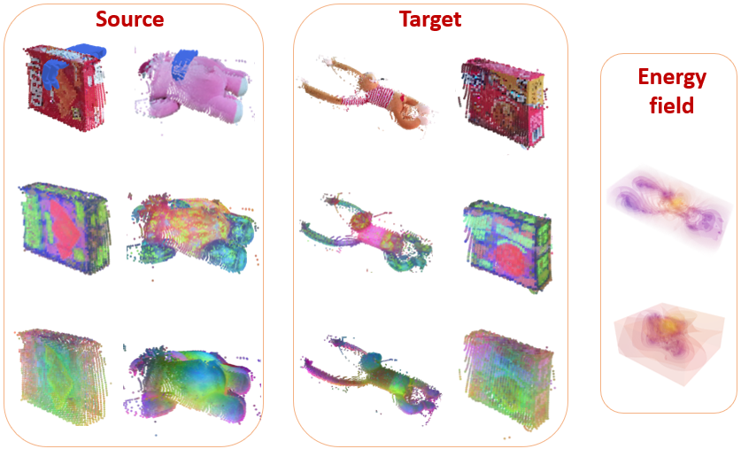
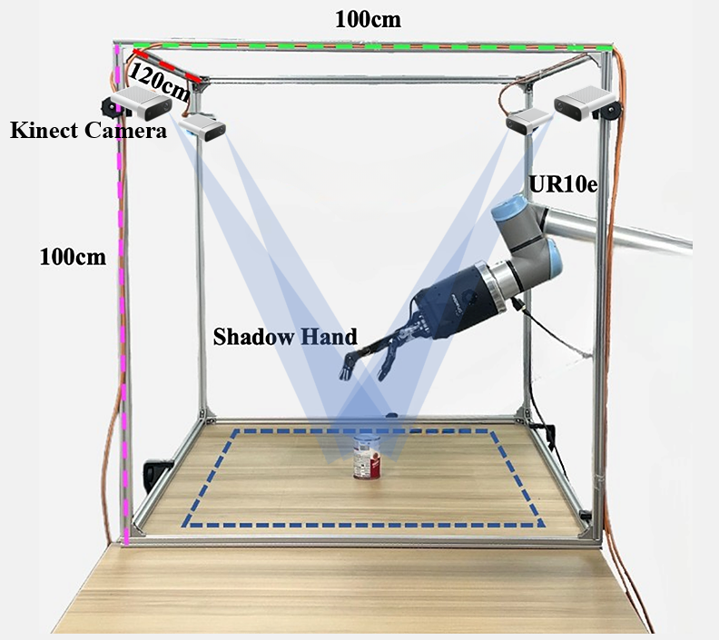
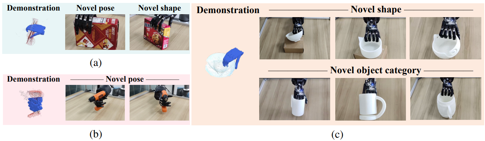
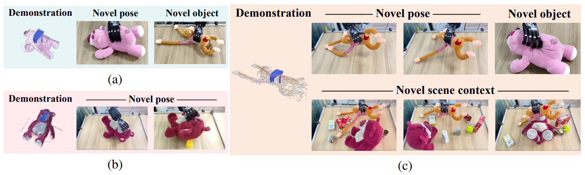

Introduction

We introduce a novel method, SparseDFF, for distilling view-consistent 3D Distilled Feature Field (DFF) from sparse RGBD images, readily generalizable to novel scenes without any modifications or fine-tuning. The DFFs create dense correspondences across scenes, enabling one-shot learning of dexterous manipulations. This approach facilitates seamless manipulation transfer to new scenes, effectively handling variations in object poses, deformations, scene contexts, and categories.
Our approach can be applied to various objects, bears, boxes, monkeys, and so on to convert an object, which can be a source or a target, to a feature field then optimized the feature field to the one with higher consistency.
Method Overview
Our method introduces a novel method, SparseDFF, for distilling view-consistent 3D Distilled Feature Field ( DFF ) from sparse RGBD images, readily generalizable to novel scenes without any modifications or fine-tuning. The DFFs create dense correspondences across scenes, enabling one-shot learning of dexterous manipulations. This approach facilitates seamless manipulation transfer to new scenes, effectively handling variations in object poses, deformations, scene contexts, and categories.
Constructing sparse-view DFFs
We sample query points on the end-effector and compute their features using the learned 3D feature field. Minimizing the feature differences as an energy function facilitates the transfer of the end-effector pose from the source demonstration to the target manipulation. The color gradient on the hand indicates the optimization steps from start to end.
End-Effector Optimization
We sample query points on the end-effector and compute their features using the learned 3D feature field. Minimizing the feature differences as an energy function facilitates the transfer of the end-effector pose from the source demonstration to the target manipulation.
Experiments
Real robot setup
Our methodology is validated through real-world experiments with a dexterous hand interacting with both rigid and deformable objects Our real robot setup consists of four Kinect cameras hanging on four pillars used to get point clouds of the scene, a UR 10e arm, a dexterous hand, and an object on the table to be manipulated.
Qualitative results on rigid objects grasping
Each panel illustrates the initial grasping pose, determined via our end-effector optimization, followed by a frame capturing the successful lift-off of the target object. (a) Grasping Box1 and transferring the skill to Boxes in new poses, including a distinct box Box2. (b) A functional grasp of a drill by its handle. (c) Transferring the learned grasp on Bowl1 to bowls with varied shapes (top row) and cross-category generalization to Mugs (bottom row).
Qualitative results on deformable objects grasping
For each successful grasp, we show the initial grasping pose and a frame demonstrating the successful lift of the object off the table. (a) Learning to grasp SmallBear and transferring this skill to various poses and to the Monkey. (b) Learning to grasp BigBear by the nose is challenging due to its small nose. (c) Learning to grasp the Monkey, showcasing adaptability to significant deformations and transfers to SmallBear. Additionally, a challenging scenario is presented where the Monkey is surrounded by multiple objects, showing the capability to handle interactions and occlusions.
Pet toy animals
Pet toy animals. (a) Head caressing is transferred from a single, lying Monkey to a scene with the Monkey hugging the BigBear, exemplifying the method’s adaptability to varying scene compositions and interactions. (b) Butt patting is transferred from the Monkey to the SmallBear, whether the SmallBear is alone or in different scene contexts, underlining the method’s versatility across various scenarios and object interactions.
If you have any questions, please contact Qianxu Wang (2100013013@stu.pku.edu.cn).